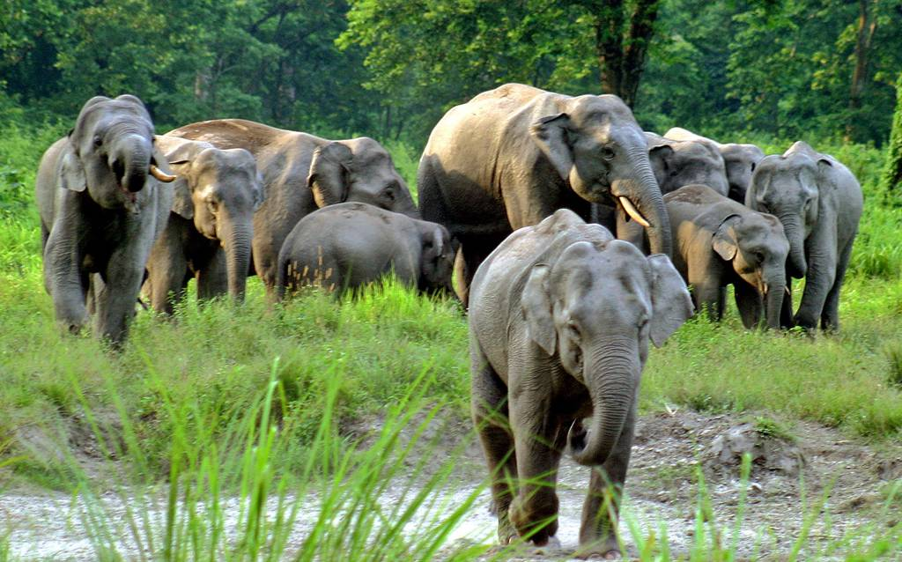

Sundarban Mangrove Forest
The Sundarbans is a mangrove area in the delta formed by the confluence of the Ganges, Brahmaputra and Meghna Rivers in the Bay of Bengal. It spans from the Hooghly River in India's state of West Bengal to the Baleswar River in Bangladesh. It comprises closed and open mangrove forests, agriculturally used land, mudflats and barren land, and is intersected by multiple tidal streams and channels. Four protected areas in the Sundarbans are enlisted as UNESCO World Heritage Sites, viz Sundarbans National Park, Sundarbans West, Sundarbans South and Sundarbans East Wildlife Sanctuaries. The Sundarbans mangrove forest covers an area of about 10,000 km2 (3,900 sq mi), of which forests in Bangladesh's Khulna Division extend over 6,017 km2 (2,323 sq mi) and in West Bengal, they extend over 4,260 km2 (1,640 sq mi) across the South 24 Parganas and North 24 Parganas districts. The most abundant tree species are sundri (Heritiera fomes) and gewa (Excoecaria agallocha). The forests provide habitat to 453 faunal wildlife, including 290 bird, 120 fish, 42 mammal, 35 reptile and eight amphibian species. Despite a total ban on all killing or capture of wildlife other than fish and some invertebrates, it appears that there is a consistent pattern of depleted biodiversity or loss of species in the 20th century, and that the ecological quality of the forest is declining. The Directorate of Forest is responsible for the administration and management of Sundarban National Park in West Bengal. In Bangladesh, a Forest Circle was created in 1993 to preserve the forest, and Chief Conservators of Forests have been posted since. Despite preservation commitments from both Governments, the Sunderbans are under threat from both natural and human-made causes. In 2007, the landfall of Cyclone Sidr damaged around 40% of the Sundarbans. The forest is also suffering from increased salinity due to rising sea levels and reduced freshwater supply. Again in May 2009 Cyclone Aila devastated Sundarban with massive casualties. At least 100,000 people were affected by this cyclone. The proposed coal-fired Rampal power station situated 14 km (8.7 mi) north of the Sundarbans at Rampal Upazila of Bagerhat District in Khulna, Bangladesh, is anticipated to further damage this unique mangrove forest according to a 2016 report by UNESCO.

Jaldapara Wildlife Sanctuary
Situated in the Eastern foothills of the Himalayas, the Jaldapara Wildlife Sanctuary along with Gorumara National Park is famous for one horned rhinoceros, elephants and Bengal Tigers, spotted deers, barking deers, sambhar deers, bison, wild pig, hog deer and bison. The skies here too will be a part of your tourist spot with a sizeable variety of eagles, Bengal florican, Indian Hornbill, jungle fowl, pea fowl, patridges and more. Varieties of eagles such as crested eagle and fishing eagle can also be seen. You can also visit the Gorumara National Park nearby and the ruins of an old fort situated inside the Chilapata Forest. Since Jaldapara is famous for its innumerable elephants, you can take an elephant ride through the park. Alternately, you can also take the Safaris available on hire.